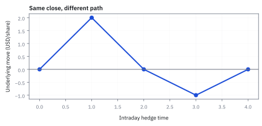
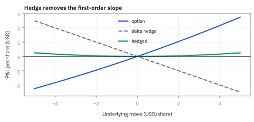
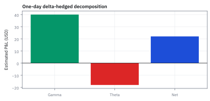
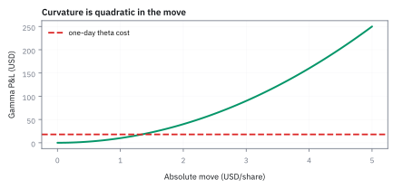
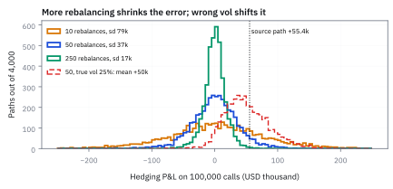
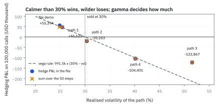

18.4 Delta Hedging P&L
delta hedge ลบความเสี่ยงอันดับหนึ่งออก สิ่งที่เหลือคือ gamma กับ theta ซึ่งรวมกันเป็นการเดิมพันว่าหุ้นจะแกว่งจริงมากกว่าที่ราคา option คิดไว้หรือไม่
โต๊ะถือ call 1,000 ตัว แต่ละตัวมี gamma 0.020 และทั้งก้อนเสียค่าเวลา (theta) \$18 ต่อวัน โต๊ะ hedge delta ไว้ตลอด วันนี้หุ้นเปิด \$100 ขึ้นไป \$102 แล้วกลับมาปิดที่ \$100 หัวหน้าถามว่าวันนี้ได้เสียเท่าไร ผู้ช่วยตอบว่า “ราคาปิดเท่าเดิม และเรา hedge แล้ว จึงเสียแค่ค่าเวลา \$18” ถูกไหม?
ลองตอบก่อนเปิดเฉลย
ไม่ถูก วันนี้ได้ \$62 ตอนหุ้นขึ้นถึง \$102 delta ของทั้งก้อนเพิ่ม 40 หุ้น hedge จึงต้องขายหุ้นเพิ่ม 40 หุ้นที่ \$102 ตอนหุ้นกลับมา \$100 delta ลดลงเท่าเดิม จึงซื้อ 40 หุ้นนั้นคืน ขายแพงซื้อถูกได้ \$80 หักค่าเวลา \$18 เหลือ \$62 ราคาปิดบอกไม่ได้ว่า hedge ได้เสียเท่าไร เส้นทางระหว่างวันต่างหากที่บอก
สิ่งที่เราจะสร้าง
18.3 แสดงว่าถ้าปรับพอร์ตหุ้นกับเงินกู้ทุกกิ่งของต้นไม้ ก็เลียนแบบ option ได้ครบ และ 14.1 ทำแบบเดียวกันในเวลาต่อเนื่อง แต่โต๊ะจริงปรับได้เป็นช่วง ราคาไม่ได้ขยับตามแบบจำลอง และความผันผวนที่ใช้ตั้งราคาก็ไม่เท่ากับที่เกิดจริง หน้านี้นับว่าหลัง hedge แล้วเงินได้เสียมาจากไหน
ลำดับคือ เดินตามคำสั่งซื้อขายของโจทย์เปิดหน้าด้วยมือ กาง Taylor ของราคา option ดูว่า hedge ลบพจน์ไหนออก ใช้สมการ Black–Scholes แสดงว่า theta คือราคาของ gamma ไล่ตัวอย่างห้าวันทั้งแบบประมาณและคิดราคาใหม่จริง นับต้นทุนการปรับ แล้วใช้แบบฝึกของคอร์ส (ขาย call 100,000 ตัว ปรับ 50 ครั้ง) ดูผลของความถี่ ความผันผวนที่ใช้ผิด และจังหวะที่หุ้นแกว่ง
ศัพท์ที่ใช้ในหัวข้อนี้
- Delta hedge
- ถือหุ้นสวนทางกับ delta ของ option เพื่อให้พอร์ตไม่ได้เสียเมื่อหุ้นขยับนิดเดียว ต้องปรับจำนวนหุ้นใหม่เรื่อย ๆ เพราะ delta เปลี่ยนตามราคาและเวลา
- Gamma และ theta
- gamma คืออัตราที่ delta เปลี่ยนเมื่อหุ้นขยับ \$1 (14.3) theta คือมูลค่าที่ option เสียไปเมื่อเวลาผ่านไปโดยหุ้นไม่ขยับ สองตัวนี้คือสิ่งที่เหลือหลัง hedge
- Implied และ realized volatility
- implied คือความผันผวนที่ใส่ใน Black–Scholes แล้วได้ราคาตลาด (ราคาที่จ่าย) realized คือความผันผวนที่หุ้นแกว่งจริงในช่วงที่ถือ (ของที่ได้)
- Gamma scalping
- ถือ option แล้ว hedge ไปเรื่อย ๆ ซึ่งบังคับให้ขายหุ้นตอนขึ้นและซื้อตอนลง กำไรจากการขายแพงซื้อถูกนี้คือเงินของ gamma
- Vega
- ราคา option เปลี่ยนเท่าไรเมื่อความผันผวนขยับ ใช้บอกขนาดของการเดิมพันความผันผวนเป็นเงิน
- Self-financing
- พอร์ตที่ปรับได้โดยไม่เติมหรือดึงเงิน เงินซื้อหุ้นเพิ่มมาจากเงินฝากหรือเงินกู้ของพอร์ตเอง เป็นเงื่อนไขที่ทำให้ต้นทุนตอนเริ่มคือต้นทุนทั้งหมด (18.3 ขั้นที่ 8)
สัญลักษณ์และหน่วย
| สัญลักษณ์ | ความหมาย | หน่วย |
|---|---|---|
| $V,\ S,\ K$ | ราคา option ราคาหุ้น และ strike | \$ |
| $\Delta,\ \Gamma,\ \Theta$ | delta, gamma และ theta ของ option | หุ้น, หุ้นต่อ \$, \$ ต่อวันหรือต่อปี |
| $\Delta S,\ \Delta t$ | การขยับของหุ้นในหนึ่งช่วง และความยาวช่วง | \$, ปี |
| $\Pi$ | กำไรขาดทุนของพอร์ตที่ hedge แล้ว | \$ |
| $\sigma_{\rm imp},\ \sigma_{\rm real}$ | ความผันผวนที่ใช้ตั้งราคา และที่เกิดจริง | ต่อปี |
| $\mathcal V,\ n$ | vega ของทั้งก้อน (ต่อความผันผวน 1.00) และจำนวน option | \$, ตัว |
ขั้นที่ 1 — เดินตามคำสั่งซื้อขายด้วยมือ: 100 ไป 102 แล้วกลับ 100
ก่อนมีสูตร ลองทำตามที่มือของคน hedge ต้องทำจริง call 1,000 ตัว gamma ตัวละ 0.020 แปลว่าหุ้นขึ้น \$1 delta ของทั้งก้อนเพิ่ม 20 หุ้น ตลอดวันต้องถือหุ้นชอร์ตเท่ากับ delta เสมอ
ตอนหุ้นถึง 102 call ทั้งก้อนมีหุ้นเทียบเท่าเกินมา 40 หุ้น จึงขาย 40 หุ้นที่ 102 ตอนหุ้นกลับ 100 delta หดกลับ จึงซื้อ 40 หุ้นคืนที่ 100 ได้ \$80 โดยไม่ได้ทายทิศทางเลย ส่วน call เองกลับมามีค่าเท่าเดิมเพราะหุ้นกลับที่เดิม
แถวที่สี่คิด \$80 อีกทางด้วยสูตรความโค้ง $\tfrac12\Gamma(\Delta S)^2$ สองขา ขาละ \$40 ได้เท่ากัน ขั้นที่ 2 จะแสดงว่าสูตรนี้มาจากไหน ค่าเวลา \$18 จ่ายทุกวันไม่ว่าหุ้นจะแกว่งหรือไม่
Figure 18.4a — ราคาปิดเท่ากัน แต่เส้นทางต่างกัน

แกนนอนคือจังหวะที่ปรับ hedge ระหว่างวันห้าครั้ง แกนตั้งคือการขยับของหุ้นจากราคาเปิด: 0, +2, 0, −1, 0 ราคาปิดเท่าราคาเปิด แต่ hedge ต้องซื้อขายทุกครั้งที่ราคาเปลี่ยน สำหรับ call 1,000 ตัวของขั้นที่ 1 เส้นทางนี้ให้เงินของ gamma $\tfrac12(20)(2^2+2^2+1^2+1^2)=\$100$ ขณะที่เส้นแบนที่ไม่ขยับเลยให้ \$0
ขั้นที่ 2 — กาง Taylor ของราคา option แล้วเลือกว่าจะเก็บพจน์ไหน
ราคา option $V(S,t)$ ขึ้นกับราคาหุ้นและเวลา กาง Taylor สองตัวแปรถึงอันดับสอง แล้วดูขนาดจริงของแต่ละพจน์ในหนึ่งวัน ($\Delta t=1/252$ ปี ใช้ 252 วันทำการต่อปีตาม 1.1) และหุ้นขยับ \$2
ใน calculus ปกติเราทิ้งพจน์กำลังสองทั้งหมด แต่ที่นี่ทิ้งไม่ได้ทั้งหมด: $(\Delta S)^2=4$ ใหญ่กว่า $\Delta S\Delta t$ ห้าร้อยเท่า เพราะหุ้นขยับตามรากที่สองของเวลา (9.1) ไม่ใช่ตามเวลา จึงเก็บ $(\Delta S)^2$ และทิ้งสองพจน์ที่มี $\Delta t$ คูณอยู่
แถวสุดท้ายใช้ชื่อจาก 14.3: $V_S=\Delta$, $V_{SS}=\Gamma$, $V_t=\Theta$ ถ้าเพิ่มความผันผวนเป็นตัวแปรที่สามก็จะมีพจน์ $\mathrm{vega}\cdot\Delta\sigma$ ต่อท้าย ข้อควรระวัง: การทิ้งพจน์ใช้ไม่ได้ในวันที่หุ้นกระโดดแรง
ขั้นที่ 3 — หักขาหุ้นออก พจน์ทิศทางหายไปพอดี
พอร์ตที่ hedge คือ option หนึ่งตัวกับหุ้นชอร์ต $\Delta$ หุ้น ขาหุ้นได้เสีย $-\Delta\cdot\Delta S$ เอาไปรวมกับขั้นที่ 2 แล้วใส่ตัวเลขของโจทย์เปิดหน้า: หุ้นขยับ \$2 ในวันเดียวแล้วไม่กลับ
พจน์ $\Delta\,\Delta S$ หักกันหมด นี่คือความหมายทั้งหมดของ delta hedge: ไม่สนว่าหุ้นขึ้นหรือลง สิ่งที่เหลือคือความโค้ง ซึ่งบวกเสมอเพราะ $(\Delta S)^2$ ไม่ติดลบ ลบด้วยค่าเวลาที่จ่ายทุกวัน
สองแถวล่างหาจุดคุ้มทุน: ก้อนนี้ต้องให้หุ้นขยับอย่างน้อย \$1.3416 ต่อวัน (ทางไหนก็ได้) จึงจะได้ gamma พอจ่ายค่าเวลา ขยับน้อยกว่านั้นขาดทุน
Figure 18.4b — hedge ลบเส้นตรงออก เหลือความโค้ง

แกนนอนคือหุ้นขยับ −5 ถึง +5 ดอลลาร์ (201 จุด) เส้นน้ำเงินคือ option ต่อหุ้น $0.5\Delta S+\tfrac12(0.02)\Delta S^2$ (delta 0.5, gamma 0.02) เส้นประคือขาหุ้น $-0.5\Delta S$ เส้นเขียวคือผลรวม $\tfrac12(0.02)\Delta S^2$ ซึ่งแตะศูนย์ที่ไม่ขยับและได้ 0.25 ที่ ±5 รูปนี้ไม่มี theta
Figure 18.4c — หนึ่งวันของ call 1,000 ตัว: gamma ลบ theta

แท่งเขียวคือเงินของ gamma \$40 เมื่อหุ้นขยับ \$2 แท่งแดงคือค่าเวลา −\$18 แท่งน้ำเงินคือผลสุทธิ \$22 จากสูตรของขั้นที่ 3 เป็นค่าประมาณ ไม่ได้คิดราคาใหม่จริง
Figure 18.4d — เงินของ gamma โตตามกำลังสองของการขยับ

แกนนอนคือขนาดการขยับ 0 ถึง \$5 (101 จุด) เส้นเขียวคือ $1{,}000\cdot\tfrac12(0.02)m^2$ เส้นประแดงคือค่าเวลาหนึ่งวัน \$18 สองเส้นตัดกันที่ $m=1.34$ ซึ่งคือจุดคุ้มทุนของขั้นที่ 3 ที่ \$5 ได้ \$250 การขยับที่ใหญ่ขึ้นสองเท่าให้เงินสี่เท่า
ขั้นที่ 4 — theta คือราคาที่จ่ายเพื่อซื้อ gamma
ทำไมค่าเวลาถึงเป็น \$18 ไม่ใช่ตัวเลขอื่น? สมการ Black–Scholes ของ 14.1 คือ $\Theta+\tfrac12\sigma^2S^2\Gamma+rS\Delta-rV=0$ ถ้าดอกเบี้ยเป็นศูนย์ theta ถูกผูกกับ gamma ด้วยความผันผวนที่ใช้ตั้งราคา แทนกลับลงในขั้นที่ 3
วงเล็บเทียบของสองอย่าง: $(\Delta S/S)^2$ คือความแปรปรวนที่หุ้นแกว่งจริงในวันนั้น $\sigma_{\rm imp}^2\Delta t$ คือความแปรปรวนที่จ่ายไปในราคา option ถ้าแกว่งจริงมากกว่าที่จ่าย ได้เงิน ถ้าน้อยกว่า เสีย จุดคุ้มทุน $|\Delta S^*|$ จึงเป็นการขยับหนึ่ง SD ต่อวันตามความผันผวนที่จ่ายไป
แถวสุดท้ายอ่านโจทย์เปิดหน้ากลับทาง: ค่าเวลา \$18 ต่อวันกับ gamma ทั้งก้อน 20 ที่หุ้น \$100 แปลว่าตลาดตั้งราคา option นี้ที่ความผันผวน 21.30% ต่อปี และ $0.2130(100)/\sqrt{252}=1.3416$ ตรงกับจุดคุ้มทุนของขั้นที่ 3
ถ้าหุ้นแกว่งจริงเฉลี่ยวันละ $(\Delta S/S)^2=\sigma_{\rm real}^2\Delta t$ ได้วันละ $\tfrac12\Gamma S^2(\sigma_{\rm real}^2-\sigma_{\rm imp}^2)\Delta t$ ก้อนที่ $\tfrac12\Gamma S^2=\tfrac12(20)(100)^2=100{,}000$ ถ้าจ่าย 20% แต่หุ้นแกว่ง 30% ได้ $100{,}000(0.09-0.04)/252=\$19.84$ ต่อวัน
ขั้นที่ 5 — ห้าวันของ gamma scalping: ประมาณด้วยสูตร
โจทย์ให้อะไรมาบ้าง: ซื้อ call ตัวเดียว หุ้น \$100 strike 100 เหลือ 30 วันทำการ ($\tau=30/252=0.119048$ ปี) ความผันผวนที่จ่าย 20% ดอกเบี้ยศูนย์ hedge ทุกสิ้นวัน หุ้นปิดห้าวันที่ 101.8, 99.5, 99.9, 99.6, 101.7 คือขยับ +1.8, −2.3, +0.4, −0.3, +2.1
คำตอบ: ประมาณได้ +\$0.1518 ต่อ call ถ้าคิดราคา Black–Scholes ใหม่ทุกวันจริง (อายุลดวันละวัน delta ใหม่ทุกวัน) ได้ +\$0.1496 ต่างกัน 1.5% เพราะ gamma เปลี่ยนไปตามราคาและเวลาระหว่างทาง รายวันจริงคือ +0.0472, +0.1041, −0.0431, −0.0459, +0.0873
ตรวจเองใน 10 วินาที: $d_1$ มาจาก $\ln(S/K)=0$ และ $r=0$ จึงเหลือ $\tfrac12\sigma^2\tau/(\sigma\sqrt\tau)$ ส่วน $\sum(\Delta S_i)^2=3.24+5.29+0.16+0.09+4.41=13.19$
ขั้นที่ 6 — วันไหนได้ วันไหนเสีย: เทียบความผันผวนที่เกิดจริงกับที่จ่าย
ขั้นที่ 4 บอกว่าวันที่หุ้นขยับเกิน $\sigma_{\rm imp}S\sqrt{\Delta t}$ คือวันที่ได้ ถ้ารวมห้าวันเป็นความผันผวนต่อปี ก็เทียบกับ 20% ที่จ่ายได้ตรง ๆ (ใช้การขยับเป็นดอลลาร์หารด้วย 100 และค่าเฉลี่ยเป็นศูนย์ ซึ่งพอสำหรับห้าวัน)
วันที่ 1, 2 และ 5 หุ้นขยับ 1.8, 2.3 และ 2.1 เกินจุดคุ้มทุน จึงได้ วันที่ 3 และ 4 ขยับแค่ 0.4 และ 0.3 จึงเสียค่าเวลาไปเกือบเต็ม ทั้งห้าวันหุ้นแกว่งจริง 25.78% ต่อปี มากกว่า 20% ที่จ่าย ผลรวมจึงเป็นบวก
ถ้าหุ้นแกว่งแค่ 15% ต่อปี ($0.15(100)/\sqrt{252}=0.9449$ ทุกวัน) ห้าวันจะเสีย $5\cdot\tfrac12\Gamma(100)^2(0.0225-0.04)/252=\$0.1003$ ทั้งที่ไม่ได้ทายทิศทางผิดเลยสักวัน
ขั้นที่ 7 — ต้นทุนของการปรับ hedge ทุกวัน
โจทย์ให้อะไรมาบ้าง: การคิดราคาใหม่ของขั้นที่ 5 ให้ delta ใหม่ทุกสิ้นวัน ต้องซื้อหรือขายหุ้นเท่าผลต่างของ delta ค่าซื้อขาย 10 bp (0.1%) ของมูลค่าที่ซื้อขาย
คำตอบ: ซื้อขายรวม 0.4087 หุ้น มูลค่า \$41.20 เสียค่าซื้อขาย \$0.0412 หรือ 27.5% ของกำไร \$0.1496 เหลือ \$0.1084 วันที่ขยับมาก (1, 2, 5) ต้องซื้อขายมาก เพราะ delta เปลี่ยนตาม gamma คูณการขยับ
ตรวจเองใน 10 วินาที: วันแรก $\Gamma(1.8)=0.104$ ใกล้ 0.1030 ที่ซื้อขายจริง ถ้าปรับวันละ 4 ครั้ง แต่ละครั้งหุ้นขยับราวครึ่งหนึ่ง ($\sqrt{1/4}$) แต่ปรับสี่เท่า มูลค่าซื้อขายจึงโตราว $4\times\tfrac12=2$ เท่า
ขั้นที่ 8 — สูตรเดินพอร์ตทีละช่วงของคอร์ส
ในแบบฝึกของคอร์ส พอร์ต hedge เดินทีละช่วงด้วยสูตรเดียว: ถือหุ้น $\delta_i$ หุ้นในช่วงที่ $i$ ส่วนเงินที่เหลือ $V_i-\delta_iS_i$ อยู่ในบัญชีเงินฝาก (ติดลบคือกู้) ช่วงถัดไปพอร์ตได้จากหุ้น เงินปันผลอัตรา $c$ ต่อปี และดอกเบี้ย
ก้อนแรกคือกำไรของหุ้นที่ถือบวกเงินปันผลที่ได้ ก้อนที่สองคือดอกเบี้ยของเงินในบัญชี ไม่มีพจน์ไหนเป็นเงินที่เติมเข้าหรือดึงออก พอร์ตจึง self-financing แบบเดียวกับต้นไม้ของ 18.3 ขั้นที่ 8 แบบฝึกข้างล่างไม่มีปันผล ($c=0$)
ขั้นที่ 9 — แบบฝึกของคอร์ส: ขาย call 100,000 ตัว แล้วเลียนแบบด้วยการปรับ 50 ครั้ง
โจทย์ให้อะไรมาบ้าง: หุ้น \$50 call strike 50 อายุ 0.25 ปี ความผันผวน 30% ดอกเบี้ย 2% ต่อปีแบบต่อเนื่อง ขาย call 100,000 ตัว เอาเงินที่ได้สร้างพอร์ตเลียนแบบ ปรับ 50 ครั้ง ห่างกัน $\Delta t=0.005$ ปี (ราว 1.26 วันทำการ) ราคาหุ้น 51 จุดจากไฟล์ของคอร์ส จบที่ \$54.4079
คำตอบ: เริ่มด้วยเงินค่า call \$310,815.12 ซื้อหุ้นตาม delta 54,313.44 หุ้น ส่วนที่ขาดกู้มา \$2,404,856.67 ช่วงแรกหุ้นลงเป็น 49.5072 พอร์ตเหลือ $54{,}313.44(49.5072)-2{,}404{,}856.67e^{0.0001}=\$283{,}810.38$ แล้วลดหุ้นเหลือ 51,617.07 หุ้นตาม delta ใหม่ ครบ 50 ครั้งพอร์ตมี \$496,180.85 จ่ายตาม call \$440,787.27 เหลือกำไร \$55,393.58
ตรวจเองใน 10 วินาที: ทฤษฎีบอกว่า hedge ที่ปรับต่อเนื่องด้วยความผันผวนที่ถูกควรจบที่ศูนย์ แต่เส้นทางนี้แกว่งจริงแค่ 24.90% ต่อปี (sd ของ log return 50 ช่วง คูณ $\sqrt{200}$ เพราะหนึ่งปีมี 200 ช่วงขนาด 0.005) ต่ำกว่า 30% ที่ขาย คนขายที่ hedge จึงได้ส่วนต่าง ตรงกับขั้นที่ 4 ในมุมกลับ
ขั้นที่ 10 — ปรับถี่ขึ้นความคลาดลดช้า และความผันผวนที่ใช้ผิดเลื่อนผลทั้งก้อน
ถ้าหุ้นแกว่ง 30% ตามที่ขายพอดี hedge ที่ปรับเป็นช่วงก็ยังพลาดทุกช่วง เพราะแต่ละช่วงเป็น $\tfrac12\Gamma_iS_i^2(\ell_i^2-\sigma^2\Delta t)$ ตามขั้นที่ 4 เมื่อ $\ell_i=\sigma\sqrt{\Delta t}\,Z$ ความพลาดต่อช่วงคือ $\tfrac12\Gamma_iS_i^2\sigma^2\Delta t\,(Z^2-1)$ ซึ่ง SD เป็นสัดส่วนกับ $\Delta t$ ช่วงต่าง ๆ อิสระกัน ความแปรปรวนจึงบวกกัน
รูปถัดไปจำลอง 4,000 เส้นทางที่หุ้นแกว่ง 30%: ปรับ 10, 50 และ 250 ครั้ง ได้ SD ของผล \$79,092, \$36,722 และ \$16,621 ค่าเฉลี่ยราวศูนย์ ปรับถี่ขึ้นห้าเท่า SD ลดราว $\sqrt5$ เท่า ไม่ใช่ห้าเท่า โค้ดท้ายหน้าจำลองซ้ำด้วยตัวสุ่มอีกชุดได้ 76,647, 36,251 และ 16,520 ต่างกันราว 3% ซึ่งเป็นความคลาดจากการสุ่ม
ถ้าหุ้นแกว่งจริง 25% แต่ขายและ hedge ด้วย 30% ผลไม่ได้แค่กว้าง แต่เลื่อนทั้งก้อน: เฉลี่ย +\$50,288 (โค้ดได้ +\$49,917) ใกล้กับ vega ของทั้งก้อนคูณ 5 จุดคือ \$49,576 กำไร \$55,394 ของขั้นที่ 9 จึงไม่ใช่โชค แต่เป็นผลของความผันผวนที่ต่ำกว่าที่ขาย
Figure 18.4e — ความถี่ของการปรับ และความผันผวนที่ใช้ผิด

กำไรขาดทุนของการ hedge call 100,000 ตัว (หน่วยพันดอลลาร์) จาก 4,000 เส้นทางจำลอง (numpy seed 1) หุ้นแกว่งจริง 30%: ปรับ 10 ครั้งกว้างที่สุด (SD ราว 79 พัน) 50 ครั้ง (37 พัน) และ 250 ครั้งแคบที่สุด (17 พัน) ทั้งสามมีกลางที่ศูนย์ เส้นประแดงคือปรับ 50 ครั้งเมื่อหุ้นแกว่งจริง 25% ทั้งก้อนเลื่อนไปทางกำไร (เฉลี่ยราว +50 พัน) เส้นจุดคือ +55.4 พันของเส้นทางในขั้นที่ 9
ขั้นที่ 11 — สี่เส้นทางในไฟล์: vega บอกทิศ gamma บอกขนาด
แผ่นที่สองของไฟล์มีหุ้นอีกสี่เส้นทาง ทางละ 50 ช่วง ขาย call ที่ 30% และ hedge แบบเดียวกันทุกทาง กฎหยาบคือกำไร ≈ vega ของทั้งก้อน คูณส่วนต่างระหว่าง 30% กับความผันผวนจริงของทางนั้น กฎที่ละเอียดกว่าคือบวกความพลาดทีละช่วงของขั้นที่ 10 ซึ่งถ่วงแต่ละช่วงด้วย gamma ตอนนั้น
ทางที่ 3 แกว่ง 51.57% กฎ vega ทายว่าเสีย \$213,860 แต่เสียจริงแค่ \$122,867 เพราะสองในสามครั้งที่แกว่งแรงที่สุดเกิดตอนหุ้นอยู่ราว 61 และ 66 ซึ่ง call ลึกใน the money แล้ว gamma เหลือน้อย ($g_i$ ราว 378,000 และ 8,000 เทียบกับ 6.6 ล้านตอนหุ้น 48) การแกว่งสองครั้งนั้นจึงแทบไม่มีราคา
ทางที่ 2 แกว่ง 30.36% แทบเท่า 30% กฎ vega ทายว่าเสียแค่ \$3,564 แต่เสีย \$20,263 เพราะครั้งที่แกว่งแรงที่สุด (+4.98%) เกิดตอนหุ้นอยู่ 50.45 ใกล้ strike และใกล้หมดอายุ ซึ่ง gamma สูง ($g_i$ ราว 14.8 ล้าน) hedge เสียเมื่อหุ้นแกว่งแรงตรงจุดที่ gamma สูง ไม่ใช่แค่เมื่อความผันผวนเฉลี่ยสูง
ห้าเส้นทางเทียบกัน
| ทาง | ความผันผวนจริง | P&L ในไฟล์ | กฎ vega | ผลรวมทีละช่วง |
|---|---|---|---|---|
| ขั้นที่ 9 | 24.90% | +55,394 | +50,554 | +48,063 |
| 1 | 25.42% | +46,625 | +45,400 | +46,106 |
| 2 | 30.36% | −20,263 | −3,564 | −18,843 |
| 3 | 51.57% | −122,867 | −213,860 | −122,519 |
| 4 | 40.14% | −104,401 | −100,537 | −104,578 |
หน่วยดอลลาร์ ผลของคนขายที่ hedge ทางที่ 1 จบที่ 48.21 และทางที่ 4 จบที่ 43.00 ต่ำกว่า strike จึงไม่ต้องจ่ายตาม call เลย แต่ทางที่ 4 ก็ยังเสีย \$104,401 เพราะเงินหายไประหว่างทางตอนตามซื้อขายหุ้น ผลรวมทีละช่วงใกล้ของจริงกว่ากฎ vega ในทุกทางที่ gamma เปลี่ยนมาก
Figure 18.4f — กำไรขาดทุนของ hedge ตามความผันผวนที่เกิดจริง

ห้าเส้นทางจากไฟล์ของคอร์ส แกนนอนคือความผันผวนจริง (%) แกนตั้งคือกำไรขาดทุนเป็นพันดอลลาร์ จุดน้ำเงินคือผลในไฟล์ กากบาทส้มคือผลรวมทีละช่วง เส้นประคือกฎ vega $991.5(0.30-\sigma)$ พันดอลลาร์ เส้นตั้งจุดคือ 30% ที่ขาย ทางที่แกว่งน้อยกว่า 30% กำไร ทางที่แกว่งมากกว่าขาดทุน ทางที่ 3 อยู่เหนือเส้นมากเพราะแกว่งแรงตอน gamma เล็ก ป้ายในรูปใช้ความผันผวนที่ปัดแล้ว
คำถามที่ควรถามออกมาดัง ๆ
คนขาย option ได้เงินจากอะไร? ได้ค่าเวลาทุกวัน และเสียเมื่อหุ้นแกว่งเกินจุดคุ้มทุน สูตรขั้นที่ 3 กลับเครื่องหมายทั้งหมด วันที่เงียบคือวันที่ได้ วันที่หุ้นกระโดดคือวันที่เสียหนัก
ทำไม hedge แล้วยังต้องดู vega? Taylor ของขั้นที่ 2 ถ้าใส่ความผันผวนเป็นตัวแปรด้วย จะได้ $\mathrm{P\&L}\approx\Delta\,\Delta S+\tfrac12\Gamma(\Delta S)^2+\mathrm{vega}\,\Delta\sigma$ ถ้า implied volatility ของตลาดขยับ 1 จุด ก้อน call 100,000 ตัวของขั้นที่ 9 เปลี่ยนมูลค่าราว \$9,915 ทันที โดยหุ้นไม่ต้องขยับเลย
ทำไม hedge ไม่ปรับต่อเนื่องไปเลย? ขั้นที่ 7 และ 10 ตอบ: ปรับถี่ขึ้นสี่เท่าจ่ายค่าซื้อขายราวสองเท่า แต่ความคลาดลดแค่สองเท่า โต๊ะจริงจึงมักปรับเมื่อ delta เคลื่อนเกินแถบที่ตั้งไว้ แทนการปรับตามนาฬิกา
ความผิดที่ให้คำตอบผิดแบบเงียบ ๆ
เรียก delta-neutral ว่าไม่มีความเสี่ยง: หนังสือที่ delta เป็นศูนย์ยังมี gamma, vega, การกระโดด และต้นทุน ก้อน call 1,000 ตัวของขั้นที่ 1 ได้ \$62 ในวันที่ราคาปิดเท่าเดิม ถ้าเป็นคนขายก็เสีย \$62
อ่านผลจากราคาปิดอย่างเดียว: เส้นทาง 0, +2, 0, −1, 0 ให้ gamma \$100 ขณะที่เส้นแบนให้ \$0 ทั้งที่ราคาปิดเท่ากัน
ใช้ 365 วันแทน 252 วันทำการในจุดคุ้มทุน: $0.20(100)/\sqrt{365}=1.0468$ แทน 1.2599 จะคิดว่าวันที่หุ้นขยับ \$1.10 เป็นวันที่ได้ ทั้งที่ยังไม่พอจ่ายค่าเวลา
ลืมต้นทุนการปรับ: ขั้นที่ 7 เสีย 27.5% ของกำไรไปกับค่าซื้อขาย 10 bp
ใช้กฎ vega กับเส้นทางที่ gamma เปลี่ยนมาก: ทางที่ 2 กฎ vega บอกเสีย \$3,564 แต่เสียจริง \$20,263 เกือบหกเท่า
ใช้ทำอะไรบนโต๊ะจริง
รายงานกำไรขาดทุนประจำวันของโต๊ะ option แยกเป็นก้อน delta, gamma, theta และ vega ตามขั้นที่ 2 ถ้าก้อนที่อธิบายไม่ได้ใหญ่ แปลว่ามีความเสี่ยงที่แบบจำลองไม่เห็น การตัดสินใจซื้อหรือขาย option แล้ว hedge คือการเทียบความผันผวนที่คาดว่าจะเกิดจริงกับ implied ในราคา และขนาดของการเดิมพันคือ vega ของทั้งก้อน
สามโจทย์ตรวจความเข้าใจ
1. ขาย call 500 ตัว gamma ตัวละ 0.03 ได้ค่าเวลา \$12 ต่อวัน hedge delta ไว้ วันนี้หุ้นขยับ \$3 ได้เสียเท่าไร และจุดคุ้มทุนต่อวันคือเท่าไร?
เฉลย
คนขายมี gamma ติดลบ $-500(0.03)=-15$ ได้เสีย $-\tfrac12(15)(3)^2+12=-67.5+12=-\$55.5$ จุดคุ้มทุนคือ $\tfrac12(15)x^2=12$ ได้ $x=\sqrt{1.6}=\$1.2649$ หุ้นขยับน้อยกว่านั้นคนขายได้
2. หุ้น \$50 option ตั้งราคาที่ความผันผวน 40% จุดคุ้มทุนต่อวันของคนที่ซื้อแล้ว hedge คือเท่าไร เทียบกับตัวอย่างขั้นที่ 6?
เฉลย
$0.40(50)/\sqrt{252}=\$1.2599$ เท่ากับหุ้น \$100 ที่ 20% พอดี เพราะจุดคุ้มทุนขึ้นกับ $\sigma S$ ซึ่งเท่ากันคือ \$20 ต่อปี ในหน่วยเปอร์เซ็นต์ หุ้นตัวนี้ต้องขยับวันละ 2.52% ส่วนตัวอย่างขั้นที่ 6 ต้องขยับ 1.26%
3. ก้อน call 100,000 ตัวของขั้นที่ 9 ถ้าหุ้นแกว่งจริง 35% ขณะที่ขายที่ 30% กฎ vega ทายว่าคนขายที่ hedge ได้เสียเท่าไร และควรระวังอะไร?
เฉลย
$991{,}520(0.30-0.35)=-\$49{,}576$ เป็นแค่ค่าประมาณ ถ้าการแกว่งแรงเกิดตอนหุ้นใกล้ strike และใกล้หมดอายุ (gamma สูง) จะเสียมากกว่านี้ ถ้าเกิดตอนลึกใน the money จะเสียน้อยกว่า เหมือนทางที่ 2 และ 3 ของขั้นที่ 11
คำนวณซ้ำด้วย JavaScript
โค้ดนี้มีราคา Black–Scholes พร้อม delta, gamma, vega และ theta ฟังก์ชัน hedge ตามเส้นทางราคา ตัวเลขของขั้นที่ 1 ถึง 7 แบบฝึก 100,000 ตัวบนเส้นทางของไฟล์ (ราคาปัด 10 ตำแหน่ง) และการจำลอง 4,000 เส้นทางด้วยตัวสุ่มที่ตั้ง seed แล้วพิมพ์ตัวเลขหลักหนึ่งบรรทัด ใช้เวลารันราวสองวินาที
const {exp, log, sqrt, abs, max, cos, PI} = Math;
// Standard normal CDF from its Taylor series around 0 (about 1e-15 accurate for |x| < 8).
function normCdf(x) {
if (!Number.isFinite(x)) throw new TypeError('x must be a finite number');
if (x < -8) return 0;
if (x > 8) return 1;
let term = x, sum = x;
for (let k = 1; k < 300 && abs(term) > 1e-17 * abs(sum); k++) { term *= x * x / (2 * k + 1); sum += term; }
return 0.5 + sum * exp(-x * x / 2) / sqrt(2 * PI);
}
// Black-Scholes call with its delta, gamma, vega (per 1.00 of volatility) and theta per year.
function call(S, K, tau, sigma, r = 0) {
for (const [k, v] of Object.entries({S, K, tau, sigma})) {
if (!(Number.isFinite(v) && v > 0)) throw new RangeError(`${k} must be a positive number`);
}
const d1 = (log(S / K) + (r + sigma * sigma / 2) * tau) / (sigma * sqrt(tau)), d2 = d1 - sigma * sqrt(tau);
const pdf = exp(-d1 * d1 / 2) / sqrt(2 * PI);
return {price: S * normCdf(d1) - K * exp(-r * tau) * normCdf(d2), delta: normCdf(d1), d1,
gamma: pdf / (S * sigma * sqrt(tau)), vega: S * sqrt(tau) * pdf,
theta: -S * pdf * sigma / (2 * sqrt(tau)) - r * K * exp(-r * tau) * normCdf(d2)};
}
// Delta-hedge a position of n calls along a price path with steps of length dt years.
// sign = +1 for a long option hedged with short stock, -1 for a short option hedged with long stock.
// Returns the final P&L, the shares traded at each rebalance and the dollar turnover.
function hedgePath({path, K, T, sigma, r = 0, n = 1, sign = 1, dt}) {
if (!Array.isArray(path) || path.length < 2) throw new TypeError('path needs at least two prices');
if (!(dt > 0) || (path.length - 1) * dt > T + 1e-12) throw new RangeError('path is longer than the option life');
const o = call(path[0], K, T, sigma, r);
let hold = n * o.delta, cash = n * o.price - hold * path[0]; // replicating portfolio, as the seller builds it
const trades = [];
let turnover = 0;
for (let i = 1; i < path.length; i++) {
cash *= exp(r * dt);
const tau = T - i * dt;
if (tau > 1e-12) {
const next = n * call(path[i], K, tau, sigma, r).delta;
trades.push(abs(next - hold)); turnover += abs(next - hold) * path[i];
cash -= (next - hold) * path[i]; hold = next;
}
}
const S = path[path.length - 1], tau = T - (path.length - 1) * dt;
const optionValue = tau > 1e-12 ? n * call(S, K, tau, sigma, r).price : n * max(S - K, 0);
const replicating = hold * S + cash;
return {pnl: sign * (optionValue - replicating), replicating, optionValue, trades, turnover};
}
function mulberry32(seed) {
return () => {
seed |= 0; seed = seed + 0x6D2B79F5 | 0;
let t = Math.imul(seed ^ seed >>> 15, 1 | seed);
t = t + Math.imul(t ^ t >>> 7, 61 | t) ^ t;
return ((t ^ t >>> 14) >>> 0) / 4294967296;
};
}
// Five trading days: at-the-money call, 30 trading days to expiry, r = 0, implied volatility 20%.
const five = [100, 101.8, 99.5, 99.9, 99.6, 101.7];
const g0 = call(100, 100, 30 / 252, 0.20);
const thetaDay = -0.5 * 0.20 ** 2 * 100 ** 2 * g0.gamma / 252;
const sumSq = five.slice(1).reduce((s, x, i) => s + (x - five[i]) ** 2, 0);
const scalp = hedgePath({path: five, K: 100, T: 30 / 252, sigma: 0.20, dt: 1 / 252});
// Course exercise: sell 100,000 calls (S0 = K = 50, T = 0.25, sigma 30%, r 2%) and replicate with 50 rebalances.
const demo = [50, 49.5072261638, 48.0058206258, 47.765454652, 47.9461619377, 48.6752649625, 48.8790956103,
49.2794334918, 50.1904542461, 49.9612415764, 50.8434173607, 51.4727694426, 52.0210590652, 52.6979664366,
51.7284825638, 52.5525025716, 50.9252010449, 50.1889905599, 51.96906461, 52.9809292072, 52.1116375012,
51.1204434792, 50.3433057558, 51.9013809063, 51.1830971422, 50.4694611378, 51.0732836256, 51.530250603,
52.3483007529, 53.1277167665, 52.5603914266, 53.6043006216, 54.2602684615, 55.7218837165, 54.8196152958,
54.3853904306, 54.533397613, 54.0999333277, 53.1532173715, 53.3716629669, 53.7419512391, 52.5149682733,
50.8136117143, 51.178260502, 52.2562830596, 52.6513330148, 52.4337733455, 51.4482144828, 51.4294257207,
53.5708214361, 54.4078727035];
const book = {K: 50, T: 0.25, sigma: 0.30, r: 0.02, n: 100000, sign: -1, dt: 0.005};
const c0 = call(50, 50, 0.25, 0.30, 0.02);
const course = hedgePath({path: demo, ...book});
const logs = demo.slice(1).map((s, i) => log(s / demo[i]));
const mean = logs.reduce((a, b) => a + b, 0) / logs.length;
const realized = sqrt(logs.reduce((a, b) => a + (b - mean) ** 2, 0) / (logs.length - 1) / 0.005);
// Gamma-weighted sum over the 50 steps: 1/2 n Gamma_i S_i^2 (sigma^2 dt - l_i^2), seller's side.
const stepSum = logs.reduce((s, l, i) => s + 0.5 * 1e5 * call(demo[i], 50, 0.25 - i * 0.005, 0.30, 0.02).gamma
* demo[i] ** 2 * (0.09 * 0.005 - l * l), 0);
// Discrete hedging error on 4,000 simulated paths (Box-Muller normals from a seeded generator).
function simulate(steps, trueSigma, paths = 4000, seed = 1) {
const rnd = mulberry32(seed), dt = 0.25 / steps, out = [];
for (let m = 0; m < paths; m++) {
const path = [50];
for (let i = 0; i < steps; i++) {
const z = sqrt(-2 * log(rnd() || 1e-12)) * cos(2 * PI * rnd());
path.push(path[i] * exp((0.02 - trueSigma ** 2 / 2) * dt + trueSigma * sqrt(dt) * z));
}
out.push(hedgePath({path, ...book, dt}).pnl);
}
const avg = out.reduce((a, b) => a + b, 0) / paths;
return {mean: avg, sd: sqrt(out.reduce((a, b) => a + (b - avg) ** 2, 0) / (paths - 1))};
}
console.log(JSON.stringify({
roundTrip: {sold: 1000 * 0.020 * 2, gain: 1000 * 0.020 * 2 * (102 - 100), net: 80 - 18},
oneDay: {gamma: 1000 * 0.5 * 0.020 * 2 ** 2, net: 1000 * 0.5 * 0.020 * 4 - 18, breakeven: sqrt(2 * 18 / (1000 * 0.020)),
impliedVol: sqrt(2 * 18 * 252 / (1000 * 0.020 * 100 ** 2)), volDay: 0.5 * 100 ** 2 * 0.020 * 1000 * (0.30 ** 2 - 0.20 ** 2) / 252},
five: {d1: g0.d1, gamma: g0.gamma, thetaDay, thetaCheck: g0.theta / 252, sumSq, gammaGain: 0.5 * g0.gamma * sumSq,
taylor: 0.5 * g0.gamma * sumSq + 5 * thetaDay, exact: scalp.pnl, trades: scalp.trades, turnover: scalp.turnover,
cost: 0.001 * scalp.turnover, realized: sqrt(sumSq / 5) / 100 * sqrt(252), breakeven: 0.20 * 100 / sqrt(252)},
course: {d1: c0.d1, price: c0.price, V0: 1e5 * c0.price, H0: 1e5 * c0.delta, B0: 1e5 * (c0.price - c0.delta * 50),
pnl: course.pnl, replicating: course.replicating, payoff: course.optionValue, realized, stepSum, vegaBook: 1e5 * c0.vega},
sim: {n10: simulate(10, 0.30), n50: simulate(50, 0.30), n250: simulate(250, 0.30), wrongVol: simulate(50, 0.25)}
}));ที่มาที่ไป
Fischer Black และ Myron Scholes ตีพิมพ์สูตรในปี 1973 บนสมมติฐานว่า hedge ได้ต่อเนื่อง ก่อนหน้านั้น Edward Thorp ใช้การ hedge ใบสำคัญแสดงสิทธิด้วยหุ้นในการลงทุนจริงมาแล้วตั้งแต่ปลายทศวรรษ 1960 ในทางปฏิบัติโต๊ะ option เรียนรู้เร็วว่าเมื่อทิศทางถูกลบออก สิ่งที่เหลือคือการซื้อขายความผันผวน ซึ่งเป็นเหตุที่รายงานประจำวันของโต๊ะแยกกำไรขาดทุนตาม Greek มาจนทุกวันนี้
ข้อจำกัด: วิธีนี้สมมติอะไร และของจริงเป็นอย่างไร
| สมมติอะไร | ของจริง | ผลเวลาใช้งาน |
|---|---|---|
| ปรับ hedge ได้ต่อเนื่องและไม่มีต้นทุน | ปรับเป็นช่วง ทุกครั้งมีค่าซื้อขาย | ความคลาดลดแค่ $1/\sqrt N$ แต่ต้นทุนโตตาม $\sqrt N$ ต้องหาความถี่ที่คุ้ม |
| หุ้นขยับต่อเนื่อง | หุ้นกระโดด โดยเฉพาะวันประกาศผลประกอบการ | Taylor สองพจน์ใช้ไม่ได้ในวันที่เสียหนักที่สุด ต้องทดสอบด้วยการคิดราคาใหม่ |
| ความผันผวนเดียวตลอด | implied volatility ขยับทุกวัน | มีก้อน vega ในกำไรขาดทุนแม้หุ้นไม่ขยับ |
สิ่งที่ควรตอบได้หลังอ่าน
- หลัง hedge แล้ว $\Delta\Pi\approx\tfrac12\Gamma(\Delta S)^2+\Theta\Delta t$ ราคาปิดเท่าเดิมก็ยังได้ \$62 ถ้าหุ้นแกว่งระหว่างวัน
- เมื่อดอกเบี้ยเป็นศูนย์ $\Theta=-\tfrac12\sigma_{\rm imp}^2S^2\Gamma$ จึงเป็นการเดิมพันความผันผวนจริงเทียบกับที่จ่าย และจุดคุ้มทุนต่อวันคือ $\sigma_{\rm imp}S/\sqrt{252}$
- ห้าวันที่หุ้นแกว่ง 25.78% เทียบ 20% ที่จ่าย ได้ \$0.1518 ตามสูตร \$0.1496 เมื่อคิดราคาใหม่จริง และเสีย 27.5% ให้ค่าซื้อขาย
- แบบฝึก 100,000 ตัวได้ \$55,393.58 เพราะเส้นทางแกว่งแค่ 24.90% และปรับถี่ขึ้นห้าเท่าลดความคลาดแค่ราว $\sqrt5$ เท่า
- vega บอกทิศของผล แต่ gamma ตอนที่หุ้นแกว่งบอกขนาด: ทางที่แกว่ง 30.36% ยังเสีย \$20,263
18.5 ย้ายจากความเสี่ยงของ option ไปที่ต้นทุนของการซื้อขายเอง: ส่วนต่างราคาเสนอซื้อขาย และราคาที่ขยับเพราะคำสั่งของเราเอง ซึ่งคือสิ่งที่ 10 bp ในขั้นที่ 7 ทำให้ดูเล็กเกินจริง